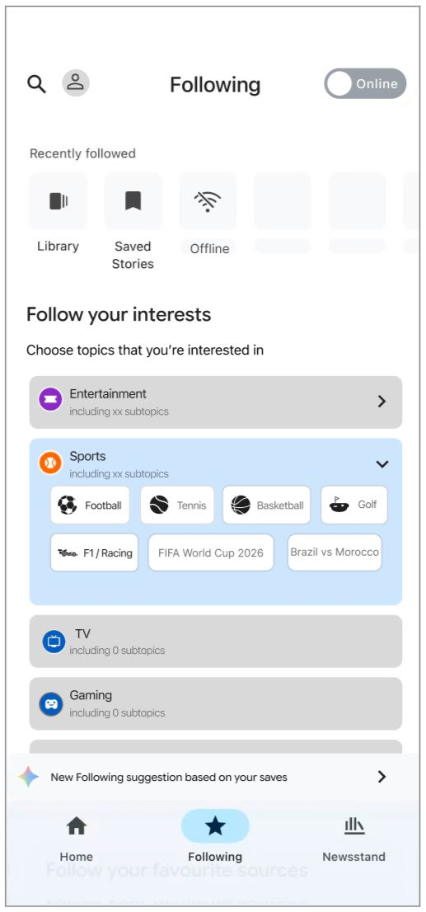
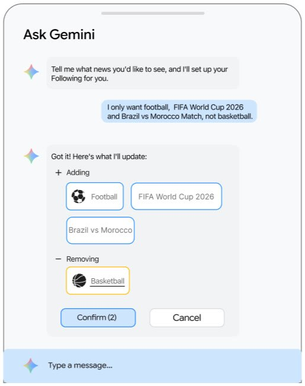
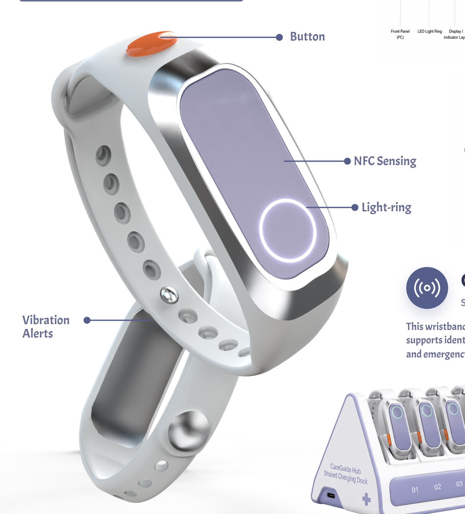
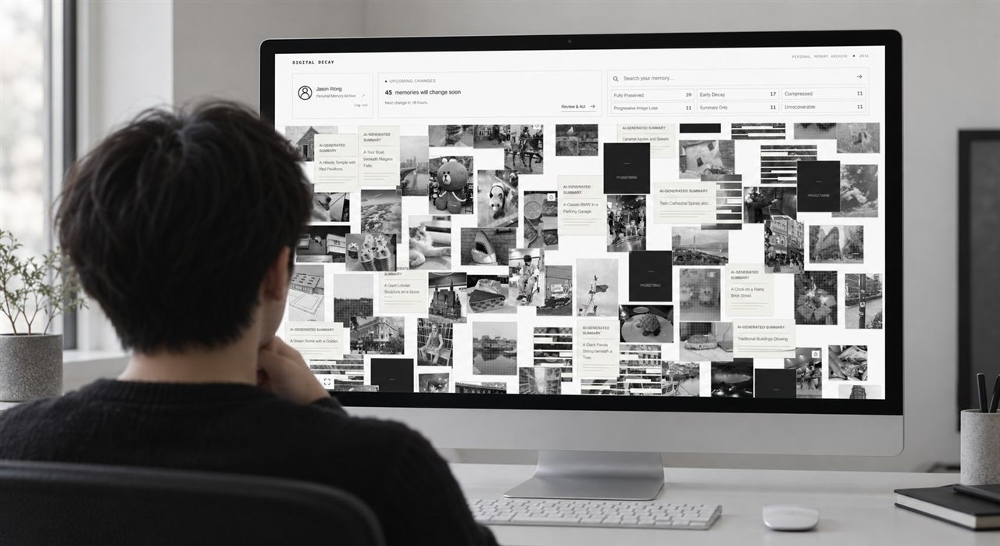

Sep 2023 — Present
OCAD University
Bachelor of Design · Digital Futures
Expected graduation: April 2027
Yixuan Wang / Portfolio
I study Digital Futures at OCAD University. My work moves between research, interactive prototypes, service design and speculative futures, building on a background in architecture and project coordination.
Start with the background01 / BACKGROUND
Sep 2023 — Present
Bachelor of Design · Digital Futures
Expected graduation: April 2027
Sep 2015 — Apr 2018
Architecture – Construction Engineering Technology
Ontario College Advanced Diploma
Developed game proposals, core design, project frameworks and game systems as part of a game product team.
Coordinated schedules, material budgets, procurement and site work. On a Toronto heritage building project, represented the developer in coordination with architects, structural engineers, contractors and municipal review processes. Engineering calculations and permit issuance remained with the relevant professionals and authorities.
Conducted building hazardous-material surveys and environmental assessments, prepared technical reports and drawings, and contributed to building-envelope and thermal-gradient studies.
Supported design and engineering coordination, technical-document reviews and drawing revisions across architectural, structural and building-services disciplines.
Work documentation
to be added.
Project drawings
to be added.
02 / A CHANGE OF DIRECTION
Games have always interested me. In an elective course, I realised that even asking why a particular moment feels good to play could become a serious design question. How does a rule guide a player? I enjoyed playing, taking the design apart, and wondering what I would do differently.
Digital Futures gave me a way to try those ideas: design a set of rules, build something people can use, and revise it in response to what they do. I found myself wanting to spend more time on that process. The decision to change programs became clear gradually.
The earlier experience stays with me: working within constraints, coordinating different disciplines, and following a design through to what can actually be built.
03 / SELECTED WORK
Research, systems and things to interact with.
Four documented projects. One in progress.
01 / Product UX · Team project
Making news recommendations easier to understand, and interests easier to change.


02 / Product & service design
Exploring pressure sensing, adjustable air chambers and feedback for early-stage adult-acquired flatfoot.

03 / SDG · Service design · Team project
Supporting communication and trust across an older patient’s medical journey.

04 / Speculative design · Interactive website
When AI decides what is worth keeping, what happens to the memories we rarely revisit?

05 / Game & robotics
An interactive game project in development. Documentation will be added as the work progresses.
04 / MORE ABOUT ME
Gold2026
Gold Winner · ArchFlow
Conceptual Design – Healthcare
Coursera · 2026
Three individual Coursera course certificates · 2025
Interviews, observation, journey mapping, service blueprints, Figma
Unity, TouchDesigner, HTML, JavaScript, Arduino prototyping
AutoCAD, Revit, SketchUp, Photoshop, InDesign, Procreate